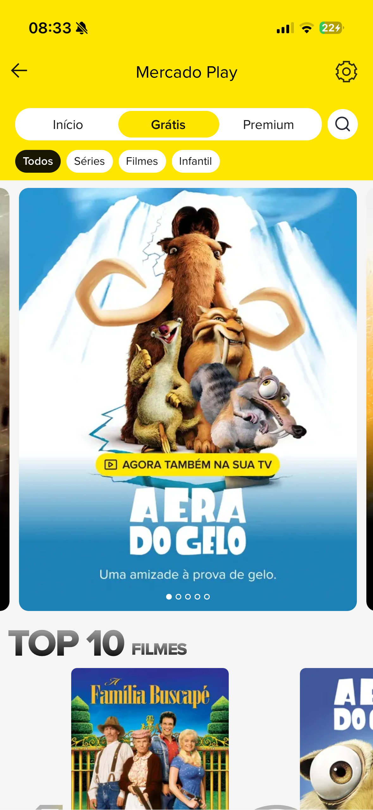
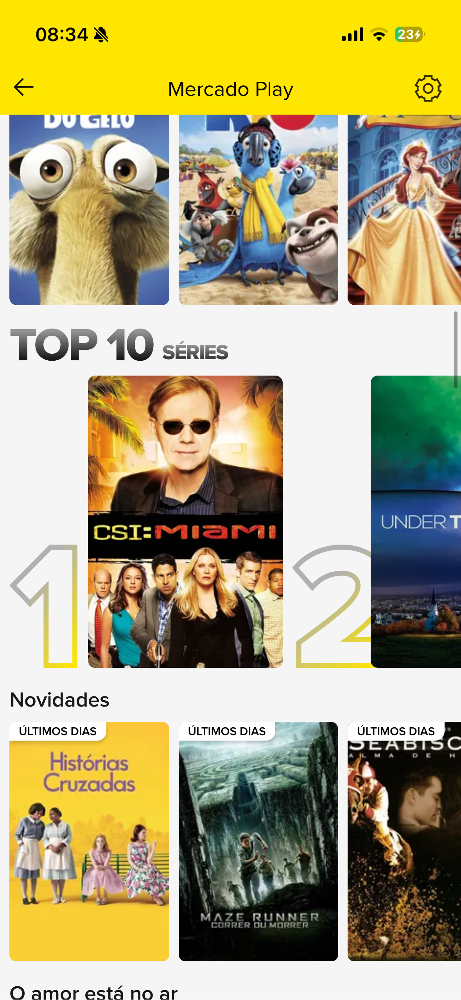

Escolher
Curadoria e contexto para reduzir incerteza.
Product Design Case · Mercado Play · 2026
Uma experiência para ajudar pessoas a encontrar o que assistir, entender como acessar e transformar afinidade em recomendações e listas úteis.
O briefing apontava espaço para aumentar a frequência de uso do Mercado Play. A investigação mostrou um problema anterior à retenção: diante de muitas opções e diferentes modalidades de acesso, a pessoa ainda precisa construir confiança para escolher.
A proposta conecta descoberta, prévias curtas, detalhe, acesso, favoritos, avaliação e listas. O recorte transforma ações isoladas em um ciclo: descobrir → escolher → guardar ou indicar → acessar → retornar.
Curadoria e contexto para reduzir incerteza.
Ações rápidas para guardar, avaliar e decidir junto.
Modalidade, preço e próximo passo antes do compromisso.
Uma revisão do produto atual e de padrões de streaming revelou três fricções recorrentes: descoberta fragmentada, sinais sociais pouco conectados à escolha e condições de acesso que surgem tarde.
Limite da evidência: a análise parte do briefing, de telas do fluxo atual e de walkthrough heurístico da autora. Não houve teste externo concluído; portanto, os pontos abaixo orientam hipóteses, não comprovam causalidade com a métrica de negócio.


Capas e trilhos ajudam a explorar, mas não respondem sozinhos por que um título faz sentido agora.
Favoritar, avaliar, listar e indicar têm valores distintos e precisam continuar reconhecíveis.
Grátis, aluguel e compra precisam aparecer antes da ação para evitar surpresa e perda de contexto.
A primeira direção concentrava valor na indicação. A revisão mostrou que compartilhar é consequência de uma escolha com confiança. O escopo foi ampliado para cobrir o que acontece antes e depois da indicação.
O fluxo começava quando alguém já sabia o que indicar.
Descoberta, confiança, contribuição e acesso formam uma experiência contínua.
A árvore mantém cada solução ligada a um comportamento observável. Ela também explicita o que ainda depende de teste ou de regras reais do produto.
Abrir árvore detalhadaGate: encontrar uma opção acionável e entender por que ela apareceu.
Gate: agir e reencontrar sem confundir favorito, avaliação e lista.
Gate: explicar modalidade, preço, prazo e próximo passo.
A jornada não presume que toda pessoa percorra o mesmo caminho. Ela organiza momentos em que a interface precisa preservar contexto e comunicar consequência.
Quatro destinos principais mantêm o modelo mental compacto: Início, Loja, Em cena e Buscar. Perfil reúne memória e colaboração. O detalhe conecta conteúdo, acesso e ações.
Continuidade, interesses, novidades e rankings aparecem em trilhos distintos.
Vídeos curtos em tela cheia ajudam a formar confiança e agir sem perder o título.
Mídia, descrição, avaliação, lista, indicação e modalidade vivem no mesmo nível.
Favoritos são rápidos; listas organizam intenção e podem receber participantes.
Preço e condição aparecem no catálogo e antes de confirmar aluguel ou compra.
Skeleton, transições, toasts e estados selecionados reduzem dúvida durante a ação.
O protótipo simula descoberta, catálogo, prévias, detalhe, favoritos, avaliação, criação e gestão de listas, indicação e acesso. Os títulos e transações são fictícios.
Abrir em tela cheiaO mini Design System usa uma taxonomia próxima ao shadcn, adaptada ao contexto do Mercado Play. Foundations, Core e Compositions compartilham tokens de cor, tipografia, espaçamento, raio, superfície e movimento.
Abrir documentação do DSO protótipo consome componentes reutilizáveis, variantes e tokens CSS. A documentação do DS é uma rota separada para permitir inspeção sem misturá-la à experiência do produto.
O fluxo passou por walkthrough heurístico, auditoria de consistência do DS e revisão de estados. Isso permitiu corrigir hierarquia, feedback, navegação secundária, sheets, scroll e distinção entre ações.
A recomendação começa antes do botão de compartilhar. Ela depende de descoberta relevante, confiança no título e clareza sobre como a outra pessoa poderá acessá-lo.
O próximo ciclo deve testar tarefas e critérios definidos na árvore, registrar desvios por tela e separar observação de interpretação.